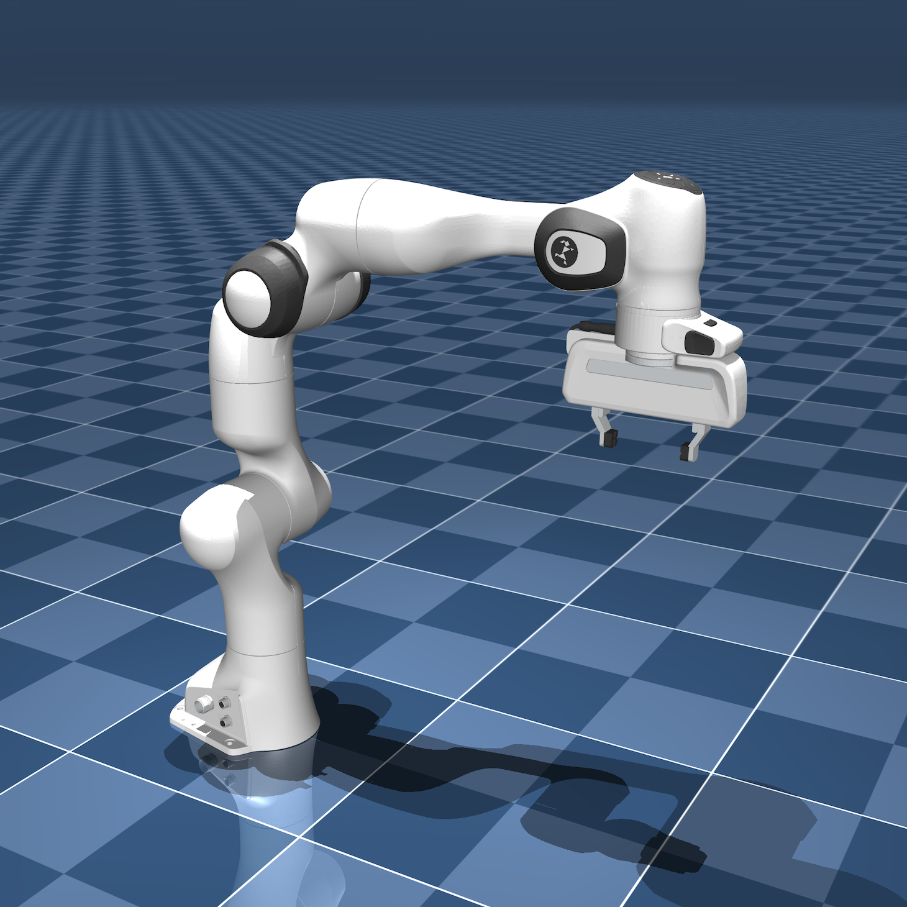
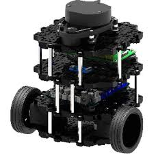
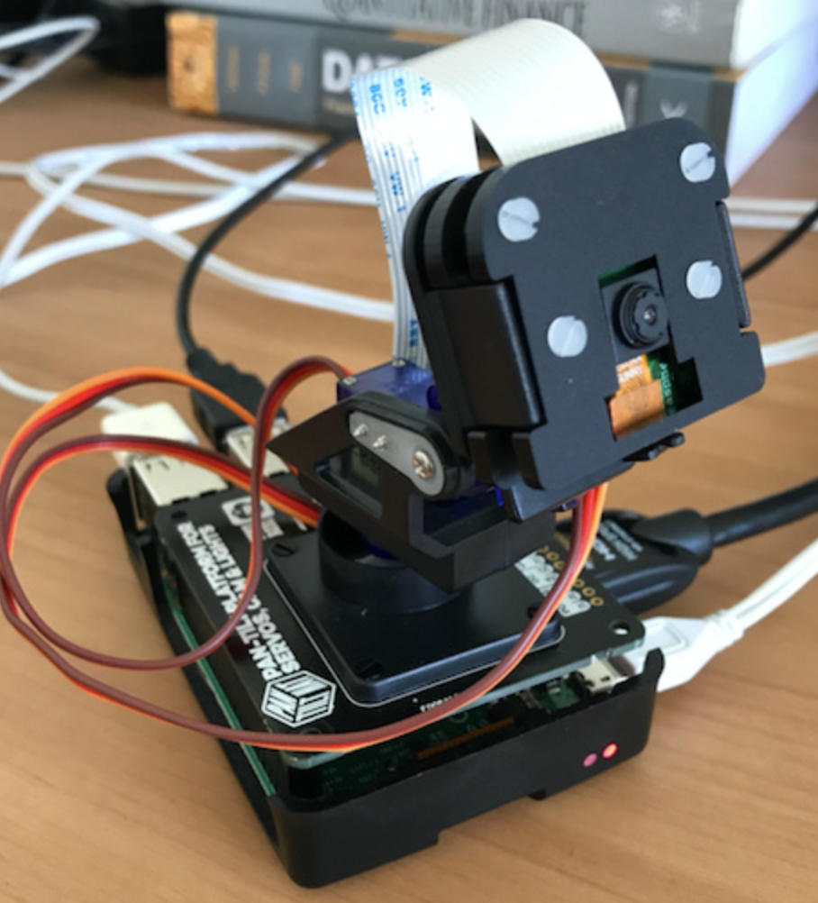
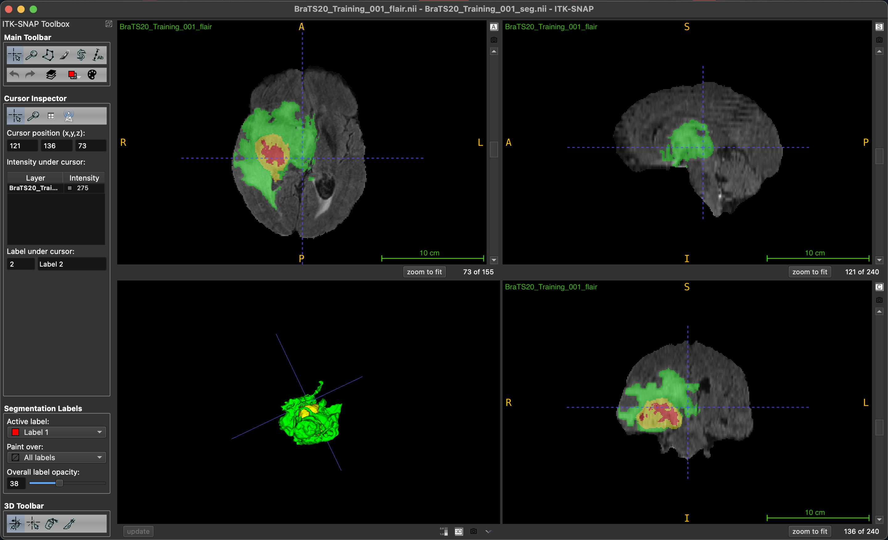
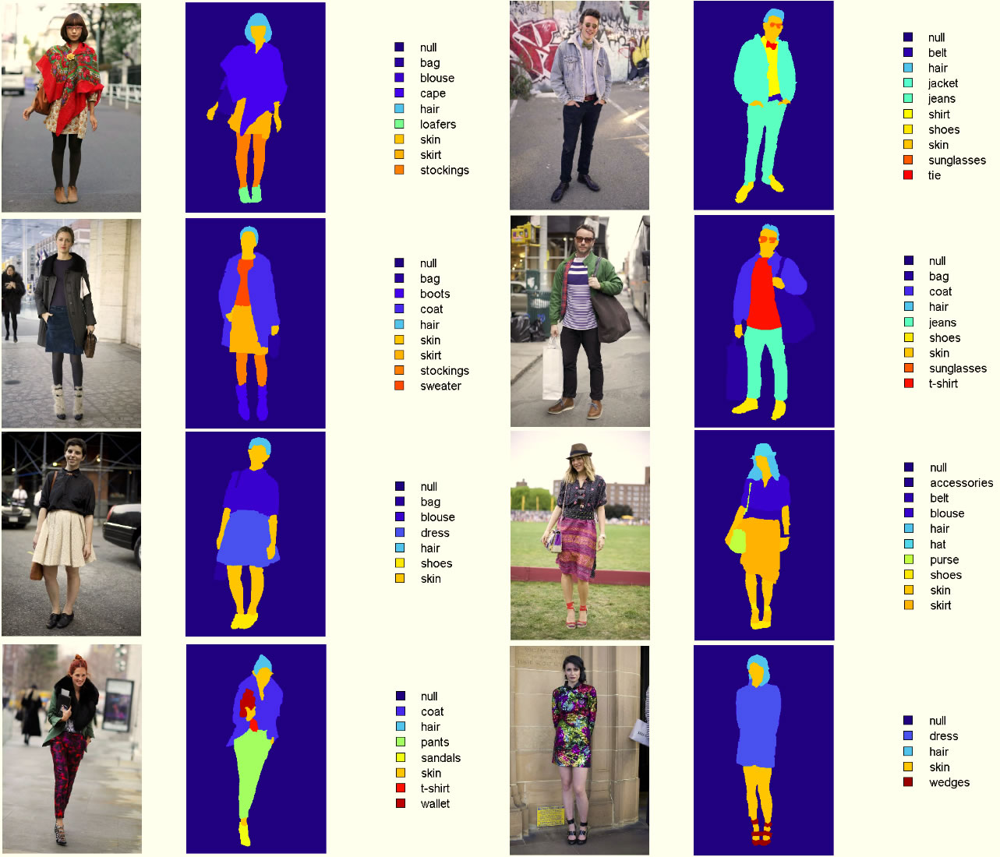
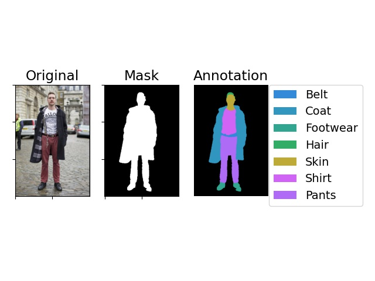

|
Oluwatimilehin Owolabi Also known as Timilehin or Timi I'm an undergraduate Electrical Engineering student at Covenant University. I lead the Robotics Research Team for Google Developer Groups on Campus, where we advance reinforcement learning, vision-language-action models, and cost-effective robotic systems. Previously, I collaborated with Dr. Daniel Omeiza at the Oxford Robotics Institute on autonomous driving and graph neural networks. I'm deeply passionate about education and mentorship. Currently, I teach machine learning to undergraduate and graduate women through APWEN. As president of the Association of Electrical and Information Engineering Students, I founded the AEIES student mentorship program to help students master engineering fundamentals from first principles. Research Vision: To unify machine learning, control theory, and cognitive science in building embodied AI systems that think, remember, and learn continuously—creating truly cognitive machines. |

ResearchMy current research focuses on meta-learning for self-improving policies and learning-based model predictive control for mobility and manipulation in legged and aerial robots. These investigations serve as stepping stones toward my ultimate goal of understanding how to build truly cognitive systems. |

|
Fuzzy-PID Controller for Liquid Level Control of Tank Systems
Ayokunle Awelewa, Kayode Ojo, Toluwa Abimbola-Oladejo, , Akshay Saha, Viranjay Srivastava IEEE International Conference on Science, Engineering and Business for Driving Sustainable Development Goals, 2025 Accepted Developed and validated a Fuzzy-PID controller for single- and double-tank liquid level systems, demonstrating superior performance over conventional PID control in managing nonlinearity, uncertainty, and multivariable disturbances. |

|
Practical Trade-offs in Neural Network Optimization: Brute Force Search vs.
Gradient Descent
Tobiloba Emmanuel Somefun, , Omowunmi Mary Longe Engineering Research Express, 2025 Published Code / PDF Comprehensive comparison of brute force and gradient descent optimization in neural networks, revealing that brute force achieves superior accuracy and lower memory usage while gradient descent offers faster convergence— highlighting opportunities for hybrid optimization strategies. |

|
Enhancing Radiological Imaging for Improved Healthcare Outcomes Through
High-Performance Hybrid Approach
Olumayowa Idowu, Haoji Hu, Amusa Akinwale, Abolaji Ilori, Zou Xingze, Yubin Wang, Aiyedun Rasheed, ASRIC Journal on Engineering Sciences, 2024 Published Developed a hybrid radiological image enhancement technique combining unsharp masking, logarithmic transformation, and adaptive histogram equalization, outperforming CLAHE and Wavelet-based methods in visual quality metrics— providing a standardized, accurate, and cost-effective solution for medical imaging systems. |

|
Energy Optimization Algorithm for Reducing Energy Consumption in Smart
Homes
Tobiloba Somefun, Adrian Egbewe Igho-Orere, Comfort Somefun, Nelson Elijah, , Samson Ongbali ICMEAS, 2023 Published Developed an intelligent home automation algorithm combining appliance scheduling with real-time environmental sensing to optimize electricity consumption, achieving up to 68% energy savings in simulations—offering a scalable solution for residential energy reduction and smart grid integration. |
Featured ProjectsA selection of projects I'm particularly passionate about, spanning robotics, computer vision, and intelligent systems. |

|
Coordinated Control of Multi-Quadrotor Swarms
, Chukwudumebi Chukwuma, Oladele Omogboyega, Ayokunle Awelewa Publishing Soon Reinforcement Learning Swarm Robotics Code / Draft PDF Advanced control strategies for quadrotor swarms using adaptive, optimal, and learning-based approaches with gym-pybullet-drones simulation environment. |

|
Affordable 3D-Printed Manipulator with WidowX 250S-Level Performance
, Victor Oduopara, Ayotomiwa Oyewumi, Isaac Odejimi, Omeyimi Mustapha, Queendolin Etta, Chukwudumebi Chukwuma, Jomiloju Olubosi, Duru Somtochukwu In Development Open Source Robotics Code *Project Lead. Google Developer Groups on Campus, Covenant University A cost-effective, 6-DOF 3D-printed robotic arm achieving performance comparable to commercial manipulators like the WidowX 250S—matching reach, repeatability, and payload capacity at just 2.5% of the cost. Fully open-source for accessible research, education, and rapid prototyping. |
|

|
VisionPick: Learning Visual Pick-and-Place with JAX and MuJoCo
Timilehin Owolabi*, Omeyimi Mustapha, Ayotomiwa Oyewumi, Jomiloju Olubosi, Duru Somtochukwu Ongoing code *Project Lead. All authors were affiliated with Google Developer Groups on Campus, Covenant University. Vision-based manipulation policy using the DeepMind Control Suite, MuJoCo Playground, and JAX to enable reliable pick-and-place performance in simulation. The system learns to detect and lift boxes autonomously, laying a foundation for scalable robotic manipulation with minimal supervision. |
|

|
TurtleBot
Timilehin Owolabi 2024 code Simulates a TurtleBot in Gazebo with precise motion control via PID and robust localization using an Extended Kalman Filter, all built on the ROS 2 ecosystem. |
|

|
CamAI: Real-Time Action Recognition and Emergency Alerts
Timilehin Owolabi, Nelson Elijah, Jesse-Paul Osemeke 2023 code CamAI is an AI-powered camera system that tracks people, recognizes actions in real time, and sends alerts during emergencies. Whether it's boosting safety in traffic zones, securing infrastructure, or enhancing agricultural efficiency, CamAI turns passive monitoring into intelligent response. |
|

|
3D Brain Tumor Segmentation
Timilehin Owolabi*, Collins Olawale, Ikeoluwa Ibitoye 2023 code / blog *Led during internship at Zummit Africa. All authors were affiliated with Zummit Africa. A U-Net-based deep learning app for segmenting brain tumors (necrotic, edema, enhancing) in 3D MRI scans. Uses FLAIR and T1CE images, with a FastAPI backend and Streamlit frontend for easy interaction and visualization. |
|


|
ClothSegNet: Semantic Segmentation of Clothing via U-Net
Timilehin Owolabi 2023 code A deep learning project that uses a U-Net model to segment clothing items from images of people. Whether it's shirts, pants, or mystery fashion choices, ClothSegNet finds the boundaries so your model doesn't have to guess where the pants end and the fashion crimes begin. |
Miscellanea |
Invited Talks |
AI: Our Current Reality and Future Trajectory,
Nigerian Society of Engineers (NSE), 2024 Deep Learning: Neural Networks, Association of Professional Women Engineers of Nigeria (APWEN), 2024 |
Teaching |
Machine Learning Tutor,
Association of Professional Women Engineers of Nigeria, (2024-Present)
Robotics Instructor, Whitesands School, 2024 |
|
Website template from here. |